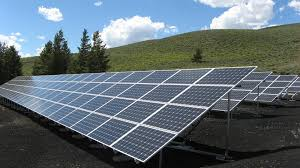

Aslan Teşvik Danışmanlık olarak, işletmelerin ve bireylerin güneş enerjisi sistemleri kurulumunda devlet tarafından sağlanan teşviklerden en iyi şekilde yararlanabilmesi için profesyonel
danışmanlık hizmetleri sunuyoruz. Güneş enerjisi, çevre dostu ve sürdürülebilir bir enerji kaynağı olarak gün geçtikçe daha fazla önem kazanmakta ve bu alanda sunulan teşvikler, maliyetlerin
azaltılmasına büyük katkı sağlamaktadır.

Güneş Enerjisi Sistemleri Teşviklerinin Önemi
Güneş enerjisi sistemleri teşvikleri, işletmeler ve bireyler için birçok avantaj sunar:
- Maliyet Tasarrufu: Teşvikler, güneş enerjisi sistemlerinin kurulum maliyetlerini düşürerek daha uygun fiyatlarla enerji üretimi sağlamaya yardımcı olur.
- Çevre Dostu Enerji: Güneş enerjisi kullanımı, karbon ayak izini azaltarak çevreye olumlu katkı sağlar.
- Enerji Bağımsızlığı: Güneş enerjisi, dışa bağımlılığı azaltarak enerji güvenliğini artırır.
- Uzun Vadeli Yatırım: Güneş enerjisi sistemleri, uzun vadede enerji maliyetlerini düşürerek işletmelerin ve bireylerin ekonomik olarak daha sürdürülebilir olmalarını sağlar.
Güneş Enerjisi Sistemleri Teşvik Türleri
Güneş enerjisi sistemleri için sunulan çeşitli teşvik programları bulunmaktadır. Bunlardan bazıları:
- Yatırım Teşvikleri: Güneş enerjisi sistemlerinin kurulumu için sağlanan vergi indirimleri, gümrük vergisi muafiyetleri ve KDV istisnaları gibi mali avantajlar.
- Hibe ve Destek Programları: Çeşitli kamu kurumları ve uluslararası kuruluşlar tarafından sağlanan hibe ve finansal destekler.
- Enerji Verimliliği Teşvikleri: Enerji verimliliğini artırmaya yönelik projelerde kullanılan güneş enerjisi sistemleri için sağlanan ek teşvikler.
- Yenilenebilir Enerji Sertifikaları: Güneş enerjisi üretimi yapan işletmelere verilen sertifikalar ve bu sertifikalar üzerinden sağlanan mali destekler.
Danışmanlık Hizmetlerimiz
Aslan Teşvik Danışmanlık olarak, güneş enerjisi sistemleri teşviklerinden yararlanmak isteyen işletmelere ve bireylere kapsamlı danışmanlık hizmetleri sunuyoruz. Hizmetlerimiz şunları içerir:
- Teşvik Analizi:Mevcut durumunuzu analiz ederek hangi güneş enerjisi teşviklerinden yararlanabileceğinizi belirliyoruz.
- Başvuru Süreci:Teşvik başvurularının doğru ve eksiksiz bir şekilde yapılması için gerekli tüm işlemleri yürütüyoruz.
- Takip ve Raporlama:Teşviklerin sağladığı avantajları düzenli olarak raporluyor ve gerekli takipleri yapıyoruz.
- Eğitim ve Bilgilendirme:Teşvikler konusunda bilgilendirme ve eğitim hizmetleri sunarak süreç hakkında tam bilgi sahibi olmanızı sağlıyoruz.
Neden Aslan Teşvik Danışmanlık?
Güneş enerjisi teşviklerinden tam anlamıyla faydalanabilmek için profesyonel bir destek almak önemlidir. Aslan Teşvik Danışmanlık olarak, uzman ekibimizle ihtiyaçlarınıza özel çözümler sunuyoruz.
Teşvik süreçlerindeki karmaşıklığı sizin için basitleştiriyor ve en uygun teşviklerden faydalanmanızı sağlıyoruz.
Sonuç
Güneş enerjisi sistemleri teşvikleri, hem çevresel hem de ekonomik açıdan büyük fırsatlar sunar. Bu teşviklerden doğru şekilde yararlanmak, maliyetlerinizi düşürerek daha sürdürülebilir bir
enerji kullanımına geçiş yapmanızı sağlar. Aslan Teşvik Danışmanlık olarak, bu süreci sizin için en verimli hale getiriyoruz. Teşvikler hakkında daha fazla bilgi almak ve hizmetlerimizden
yararlanmak için bizimle iletişime geçebilirsiniz.